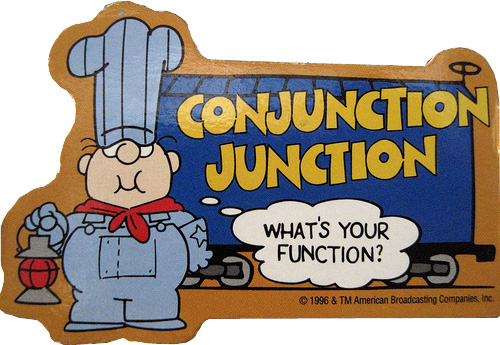

HELLO
1. Pull the latest class-exercises
2. Copy the following directories into my-class-work/
⇒ lifetime-supply
⇒ rgb-color-choice
3. Copy the following directories into homework/
⇒ temperature-converter
Class #8 (of 20)
JavaScript (pt. 2)
Announcements:
• Final Projects! First deliverable due 11/24 (Tuesday)
⇒ Project Proposal & Wireframes
Questions

Agenda
• Review document.getElementById()
• Review functions
• Browser Events
.onmouseover/.onmouseout events
• .innerHTML property
• .value property
• JS labs
document.getElementById()
document.getElementById() - review
• Used to query HTML and return an element with a specific ID attribute
document.getElementById('logo')
• The above will look through an HTML document and return the first element with and ID = "logo"
• Once an element is returned, additional JavaScript methods can be "called" on it
• Can use variables to store refrences to HTML elements:
var logo = document.getElementById('logo')
logo.onclick = someFunction
Functions
Functions - Review
• Functions are chunks of code, grouped together, that execute (or run) line-by-line
• Think of them as miniature programs
function actor () {
var greatestActor = 'Keanu Reeves'
alert('My favorite actor is ' + greatestActor)
}
1. What is the name of this function?
2. What does this function output?
3. How would you call, or invoke, this function?
Functions
• Functions can be associated with variables...
var doSomething = function () {
alert('do something!')
}
• ...and then used to respond to browser events:
document.getElementById('someBtn').onclick = doSomething
• IMPORTANT - define functions before calling them:
// WOULD NOT WORK!
document.getElementById('someBtn').onclick = doSomething
var doSomething = function () {
alert('do something!')
}
Browser Events
Browser Events
• Events that users perform in the browser:
⇒ click
⇒ mouse over
⇒ mouse out
⇒ key down
⇒ key up
⇒ form submit
• We can use JavaScript to track and respond to events
Browser Events - Mouse Over/Out
Use .onmouseover and .onmouseout to achieve a "hover" effect:
var button = document.getElementById('someElement')
button.onmouseover = overFunction
button.onmouseout = outFunction
.onmouseover is triggered when a user moves the cursor over the desired HTML element
.onmouseout is triggered when a user's cursor leaves said element
Code Along
.innerHTML Property
.innerHTML Property
• Often, you will want to set/get text from HTML
• .innerHTML can read and write HTML
• Assuming the following HTML:
Hello, World!
⇒ To read:
document.getElementById('someId').innerHTML
=> 'Hello, World!'
⇒ To write:
document.getElementById('someId').innerHTML = 'Cats'
Code Along
1. Go to http://codepen.io/cheshireoctopus/pen/YyBmMB?editors=101
2. Add .onclick events to the <button>'s
3. When clicked, these buttons should add/subtract from id="result"
4. Use .innerHTML to change the text inside id="result"
document.getElementById('zero').onclick = function () {
document.getElementById('result').innerHTML = 0
}
.value Property
.value Property
• .value is used to get/set <input> values
• WATCHOUT - similar to .innerHTML
• Is used to read and write values:
⇒ Read:
document.getElementById('someInput').value
⇒ Write:
document.getElementById('someInput').value = 'some value'
Exercise: RGB Color Choice
Open rgb-color-choice/; write JS for the following:
1. User enters a value into the red, green, and blue fields
2. User clicks 'Change the Color!' <button>, triggers a function
3. Inside this function, create variables for the color values (R, G, B)
4. Relpace the text inside id=colorfultext with the new RGB values
5. Use .style.backgroundColor to change the background color of the <body>
Exercise: Lifetime Supply
Open lifetime-supply/; write JS for the following:
1. Store your current age into a variable
2. Store a maximum age into a variable
3. Store a favorite drink (from a drop-down) into a variable
4. Store an amount per day into a variable
5. Calculate how many you would eat total for the rest of your life
6. Output your results to the user
Exercise/HW: Temperature Converter
Open temperature-converter/
• Goal: Create an application that converts farenheit to celsius (and vice versa)
• There is no starter code (HTML/CSS/JS); this is up to you!
• Bonus Challenges:
⇒ Use an event other than .onclick (hint: research key events)
⇒ Change the background based on user input (hint: research if/else statements)
What's On Deck: jQuery (pt. 1)
Class #9 (of 20) - Tuesday, November 24th
• If/Else (boolean logic)
• Anonymous vs. Named Functionsm
• Functions and Arguments
• jQuery